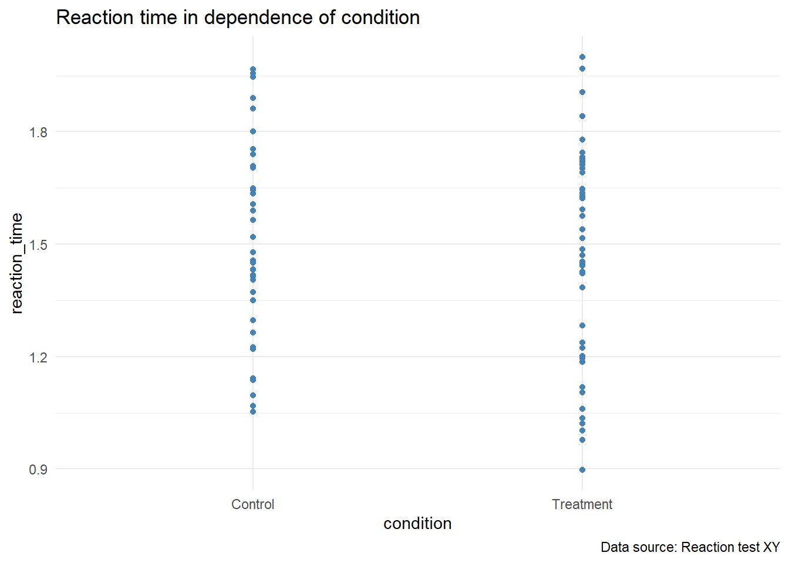
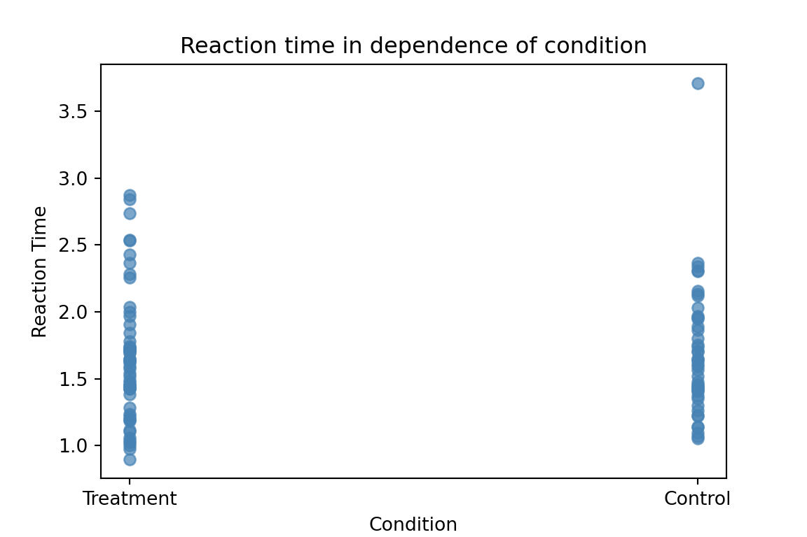

Analysis Template
Download this template from the GitHub repository or via the </>Code-button in the top right corner. This template is designed to be a starting point for your analyses, following many of the best practices for reproducibility and clarity.
1 Dependencies
We load all necessary libraries at the beginning to ensure portability and clarity.
Code
import os
import pandas as pd
import matplotlib.pyplot as plt
import random
import session_info2 Hardcoded Values
We define constants here to avoid “magic numbers” later in the script.
Code
ATTENTION_THRESHOLD <- 2
PLOT_COLOUR <- "steelblue"Code
ATTENTION_THRESHOLD = 2
PLOT_COLOUR = "steelblue"3 Data Management
3.1 Loading Data
Using relative paths ensures that the script runs on any device.
Code
# In Python, we go one level up to reach the project root from 'scripts/'
path = os.path.join("..", "data", "raw", "my_data.csv")
df = pd.read_csv(path)3.2 Processing
We follow naming conventions (snake_case) and explain why we filter data.
Code
# Removing cases that don't meet the attention threshold
cleaned_data <- subset(my_data, reaction_time < ATTENTION_THRESHOLD)Code
# Removing cases that don't meet the attention threshold
df_cleaned = df[df['reaction_time'] < ATTENTION_THRESHOLD].copy()4 Analysis & Visualization
4.1 Statistical Analysis
Here we would perform our statistical tests, ensuring to report all relevant details for reproducibility.
Code
mean_reaction_time <- mean(cleaned_data$reaction_time)Code
mean_reaction_time = df_cleaned['reaction_time'].mean()To report the result I can simply use inline code. The mean reaction time is 1.49 seconds.
4.2 Plotting
According to our workflow, we create all figures within the code and save all figures into the outputs/figs/ directory.
Code
# Create the plot
p <- ggplot(cleaned_data, aes(x = condition, y = reaction_time)) +
geom_point(color = PLOT_COLOUR) +
theme_minimal() +
labs(title = "Reaction time in dependence of condition",
caption = "Data source: Reaction test XY")
# Display
p
Code
# Create the plot
plt.figure(figsize=(6, 4))
plt.scatter(df['condition'], df['reaction_time'], color=PLOT_COLOUR, alpha=0.7)
plt.title('Reaction time in dependence of condition')
plt.xlabel('Condition')
plt.ylabel('Reaction Time')
# Display
plt.show()
Code
# Save using os.path to target the project root
save_path = os.path.join("..", "outputs", "figs", "analysis_plot_py.png")
plt.savefig(save_path, dpi=300, bbox_inches='tight')5 Reproducibility Extras
5.1 Seeds & Randomness
To ensure results remain the same across devices, we set a seed.
Code
random.seed(123)
sample_values = random.sample(range(1, 101), 3)
sample_values[7, 35, 12]5.2 Citations
As discussed by Wickham & Mineault (2023)…
5.3 Equations
\[y = \beta_0 + \beta_1 x + \epsilon\]
5.4 References
5.5 Session Information
This section is vital for long-term maintenance and troubleshooting.
Code
R version 4.5.2 (2025-10-31 ucrt)
Platform: x86_64-w64-mingw32/x64
Running under: Windows 11 x64 (build 22631)
Matrix products: default
LAPACK version 3.12.1
locale:
[1] LC_COLLATE=German_Switzerland.utf8 LC_CTYPE=German_Switzerland.utf8
[3] LC_MONETARY=German_Switzerland.utf8 LC_NUMERIC=C
[5] LC_TIME=German_Switzerland.utf8
time zone: Europe/Zurich
tzcode source: internal
attached base packages:
[1] stats graphics grDevices datasets utils methods base
other attached packages:
[1] ggplot2_4.0.2 here_1.0.2
loaded via a namespace (and not attached):
[1] vctrs_0.7.3 cli_3.6.6 knitr_1.50 rlang_1.2.0
[5] xfun_0.54 png_0.1-9 renv_1.2.0 S7_0.2.1
[9] jsonlite_2.0.0 labeling_0.4.3 glue_1.8.0 rprojroot_2.1.1
[13] htmltools_0.5.9 scales_1.4.0 rmarkdown_2.30 rappdirs_0.3.4
[17] grid_4.5.2 evaluate_1.0.5 fastmap_1.2.0 yaml_2.3.12
[21] lifecycle_1.0.5 compiler_4.5.2 RColorBrewer_1.1-3 Rcpp_1.1.1
[25] rstudioapi_0.18.0 farver_2.1.2 lattice_0.22-9 digest_0.6.39
[29] R6_2.6.1 reticulate_1.46.0 Matrix_1.7-5 tools_4.5.2
[33] withr_3.0.2 gtable_0.3.6 Code
session_info.show()-----
matplotlib 3.10.8
pandas 3.0.2
session_info 1.0.0
-----
Python 3.12.13 | packaged by conda-forge | (main, Mar 5 2026, 16:36:12) [MSC v.1944 64 bit (AMD64)]
Windows-11-10.0.22631-SP0
-----
Session information updated at 2026-04-15 12:30